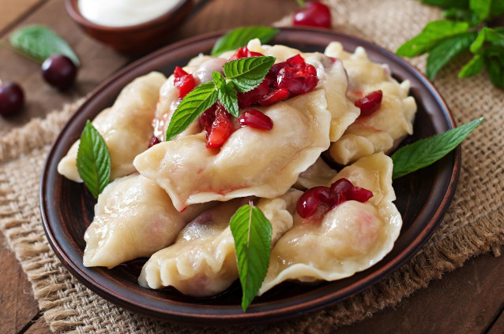

Cherry Varenyky

Description
Cherry Varenyky are a hallmark of Ukrainian cuisine. Lush, tasty and aromatic, they are well liked by everybody. Today we'll show you an unusual recipe for making them. Specifically, we'll cook them using ice-cold water. Intrigued? Then let's start.
Ingridients
- Cold water, 100 ml.
- Salt, 1/4 tsp.
- Cherry, 700 g.
- Starch, 1 tbsp.
- Egg, 1 pc.
- Wheat flour, 250 g.
- Sugar, 100 g.
Steps
- Crack one egg into a bowl. Add a quarter of a teaspoon of salt to it and mix everything with a fork.
- Pour 100 ml of very cold, almost ice-cold water into the bowl with the egg.
- Add well-sifted flour to the bowl, and knead a stiff dough.
- Knead the dough until it stops sticking to the table and hands. Do not add too much flour as to not clog the dough. Wrap the dough into a cling film and leave it on the table for 30 minutes.
- Wash the cherries and remove the pits. Add a few tablespoons of sugar into a bowl with cherries. Mix everything well. Leave the berries and sugar for a few hours so that they release juice.
- After two hours, put the cherries in a sieve and let all the excess liquid drain.
- After the juice done draining, move cherries to a plate and sprinkle with starch. Thoroughly mix the berries with starch.
- Roll out the dough into a thing layer and use a cutter or a glass to cut out round shapes for our varenyky.
- Put a spoonful of berries into the center of each shape, add a pinch of sugar and tighly pinch the edges of the varenyky.
- Cook them for 7-8 minutes in boiling, slightly salted water.
- Sprinkle the finished varenyky with sugar. They are best served with sour cream.
Thanks to the Food Obozrevatel for this recipe.
Back to main